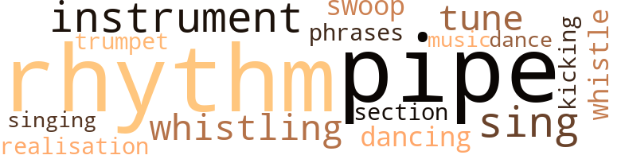
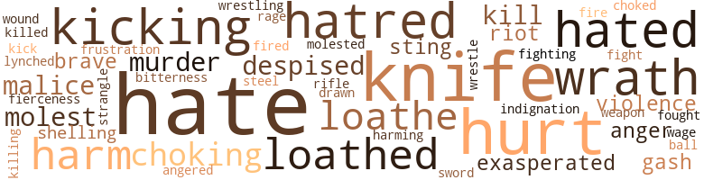
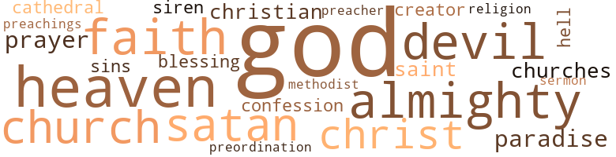

Mirror for Magistrates (A), by Gibson, Richard (1958)
25 music-related terms matched in this text.
Most frequent terms in this topic: rhythm (3); pipe (3); tune (2); instrument (2); sing (2)
cornet.n.01
Definition: a brass musical instrument with a brilliant tone; has a narrow tube and a flared bell and is played by means of valves
| word | sentence |
|---|---|
| trumpet | One mighty last second , perhaps a call of that holy trumpet blaring out eternity , like an explosion , then a rising pillar of fire , and the broken pieces rising up from the dirt and resting again in their original unity , with bodies and minds made whole again and the stale air fresh and the heavens opening upon Glory ? |
dance.n.01
Definition: an artistic form of nonverbal communication
| word | sentence |
|---|---|
| dance | He gazed at the slow dance of dangling drying leaves that would soon fall from the branches and merge into the soggy mat of the floor of the forest . |
dance.v.02
Definition: move in a pattern; usually to musical accompaniment; do or perform a dance
| word | sentence |
|---|---|
| dancing | At the state capital in Harrisburg , of course , they hardly ever concerned themselves , the high and mighty there , about Christian education , and the churches themselves , it seemed to him , were far more interested in basketball courts and Saturday night dancing parties . |
kick.v.04
Definition: kick a leg up
| word | sentence |
|---|---|
| kicking | The man bent over and , after first kicking the chain with his boot to shake off the snow , unhooked the heavy iron chain and dropped it to the snow that was rapidly covering the driveway again , after its having been cleared only that morning by the county snow plough . |
music.n.01
Definition: an artistic form of auditory communication incorporating instrumental or vocal tones in a structured and continuous manner
| word | sentence |
|---|---|
| music | Then there were sounds in the distance : like voices singing a strange music that grew slowly in crescendo , and the rustling of disturbed bushes and the cracking of twigs and the snapping of branches . |
musical_instrument.n.01
Definition: any of various devices or contrivances that can be used to produce musical tones or sounds
| word | sentence |
|---|---|
| instrument | Steam and hot water bubbled and spurted out of a small leak at the base of the instrument . |
| instrument | He saw the old man with his future completely vanished , yearning and wishing for all that he had never had or done , using the child as an instrument for remaking in fantasy the vacuum of his life . |
phrase.n.02
Definition: a short musical passage
| word | sentence |
|---|---|
| phrases | As he read the lines through again , he made loud , mournful sounds with his tongue , then sighed wearily and looked away from the paper into the gloom of the room , hearing the phrases , the warped , legal language , echoing in the hollow of his mind . |
pipe.n.04
Definition: a tubular wind instrument
| word | sentence |
|---|---|
| pipe | Cautiously Wilmer slipped up to the rusted length of iron pipe that served Fireman as a stake for the goat . |
| pipe | The light chain ( earlier there had been a rope and then the goat was always getting away , and even now with the chain it managed somehow to get loose ) passed through a large hole in the pipe and was twisted around itself in a loose form of a knot . |
| pipe | The jagged cut steamed a little , like a leaking pipe in the furnace room . |
realization.n.03
Definition: a musical composition that has been completed or enriched by someone other than the composer
| word | sentence |
|---|---|
| realisation | I just do n't want you and your fianc6 to enter into marriage blindly , without the realisation of what it means . |
rhythm.n.04
Definition: the arrangement of spoken words alternating stressed and unstressed elements
| word | sentence |
|---|---|
| rhythm | Overhead bare , unshielded electric bulbs , their filaments flickering without rhythm , spaced their journey , the rough concrete walls funnelling them downwards , before and behind them a seeming infinity of steps . |
| rhythm | The many legs of the spider worked in rapid rhythm , yet the spider itself moved without speed . |
| rhythm | The thin knife-blade rubbed against his overalls in rhythm with his pace , reminding him of his purpose , hurrying him on . |
section.n.01
Definition: a self-contained part of a larger composition (written or musical)
| word | sentence |
|---|---|
| section | There was a section devoted to the " Home Front " and there Bubba found a photo of three fat Philadelphia cops battering an unpatriotic striker with their riot clubs . |
sing.v.02
Definition: produce tones with the voice
| word | sentence |
|---|---|
| sing | " To sing His praises with labour six days a week , '' he had often said , " is as close to a holy life as mortal man can come . " |
| sing | Old enough to know that love was lying in darkness , under dirt , with worms in her once-brown hair and lizards crawling in her blackened mouth to sing in unknown tongues . |
| singing | Then there were sounds in the distance : like voices singing a strange music that grew slowly in crescendo , and the rustling of disturbed bushes and the cracking of twigs and the snapping of branches . |
swoop.n.01
Definition: (music) rapid sliding up or down the musical scale
| word | sentence |
|---|---|
| swoop | Very slowly now , he moved towards the staring animal , step by step , until all he had to do was to make a swoop down on the chain and he would have the goat again . |
tune.n.01
Definition: a succession of notes forming a distinctive sequence
| word | sentence |
|---|---|
| tune | Whistling some quite nameless tune he went inside the cottage , sat down again in the soft-cushioned rocking chair and gazed blankly out the long east window at the empty blue asphalt of the highway . |
| tune | Hidden in a bush at the edge of the clearing , Ferdy heard her voice merged with the high murmur of the stream , a flowing , cooling laughter , a wood-song , girl-song , temptress-song , love-song , a vocal caress , a soothing , a petting , a kiss of sound , a trick , a snare , a pit of sin , a devil 's tune . |
whistle.v.01
Definition: make whistling sounds
| word | sentence |
|---|---|
| whistle | It was only an illusion , however , and one that could be snapped easily by a blast of the First Sergeant 's whistle , but while the illusion lasted it pleased him greatly . |
| Whistling | Whistling some quite nameless tune he went inside the cottage , sat down again in the soft-cushioned rocking chair and gazed blankly out the long east window at the empty blue asphalt of the highway . |
| whistling | In the distance he heard a weak whistling sound that suddenly grew into a whoosh and cracked and split , like the sound of lightning , near by . |
110 violence-related terms matched in this text.
Most frequent terms in this topic: hate (13); knife (8); hurt (7); hated (4); wrath (4)
abhor.v.01
Definition: find repugnant
| word | sentence |
|---|---|
| loathed | Mr. Fenderson had told him that evil would lure you on , he remembered , unless you crushed it , put it down , wiped it out , loathed and despised it . |
| loathe | They must come to see themselves for what they are and loathe themselves just as we loathe them . |
| loathe | They must come to see themselves for what they are and loathe themselves just as we loathe them . |
| loathed | And he saw it in the pit of his mind , the wroth flames of the Lord rising up around himself and around them all , tearing with the fullness of justice into their souls , and he knew that he was lost , lost beyond hope , and he realised that his God , the only God , loathed him , as one might loathe a snake or a cockroach , and loathed all of mankind , for they had fallen away from Him into the darkness where there would be no grace . |
| loathe | And he saw it in the pit of his mind , the wroth flames of the Lord rising up around himself and around them all , tearing with the fullness of justice into their souls , and he knew that he was lost , lost beyond hope , and he realised that his God , the only God , loathed him , as one might loathe a snake or a cockroach , and loathed all of mankind , for they had fallen away from Him into the darkness where there would be no grace . |
| loathed | And he saw it in the pit of his mind , the wroth flames of the Lord rising up around himself and around them all , tearing with the fullness of justice into their souls , and he knew that he was lost , lost beyond hope , and he realised that his God , the only God , loathed him , as one might loathe a snake or a cockroach , and loathed all of mankind , for they had fallen away from Him into the darkness where there would be no grace . |
anger.n.01
Definition: a strong emotion; a feeling that is oriented toward some real or supposed grievance
| word | sentence |
|---|---|
| anger | One day , he was certain of it , Louisa Mae and Charley were going to play another of their nasty tricks on him and he would reach his limit and then he might do something in his anger that he would regret . |
| anger | Ferdy held tightly to Mr. Fenderson 's hand , fearful of Bubba 's anger . |
anger.v.02
Definition: become angry
| word | sentence |
|---|---|
| angered | Now I 'll fix you , he thought , doubly angered by the difficulty in finding the animal . |
blast.v.03
Definition: use explosives on
| word | sentence |
|---|---|
| shelling | As he turned around the side of the building and went along its rear , he saw there ahead of him on the small porch outside the kitchen door the old cook and Lois , one of the girls who helped her , sitting bent over a pot into which they were shelling lima beans . |
| shelling | ' Yes , Lord , ' she whined self-pitying and slowed her shelling long enough to wipe the sweat from her forehead with a dramatic flourish . |
contemn.v.01
Definition: look down on with disdain
| word | sentence |
|---|---|
| despised | But that day the warm , flowing light of the sun , his own edse and contentment with himself and his friend , Bubba , despite everything , would not let him linger long on the unpleasantness of that woman , even though it was true that he did hate her , despised her more than any other thing in his world . |
| despised | Mr. Fenderson had told him that evil would lure you on , he remembered , unless you crushed it , put it down , wiped it out , loathed and despised it . |
cut.n.05
Definition: a wound made by cutting
| word | sentence |
|---|---|
| gash | He pushed the point of the blade into the gash and tore through the sticky flesh and the tangled hair until the dark blood foamed out . |
| gash | Somehow Bubba then managed to drag himself and the dazed white officer back to the company area , despite the long deep gash in his leg . |
draw.v.23
Definition: pull (a person) apart with four horses tied to his extremities, so as to execute him
| word | sentence |
|---|---|
| drawn | No matter how many grandiose vote-catching city plans were drawn up or how many feeble attempts were made to clean things up , to run the hoodlums , whores , and numbers racketeers off the street comers , to put an extra dollar on the relief checks , to have some clean-smelling white lady come and preach the economic virtues of planned parenthood , Felton Street remained the same prison that it had always been . |
engage.v.07
Definition: carry on (wars, battles, or campaigns)
| word | sentence |
|---|---|
| wage | And so it was he himself who always had to make the tedious trips to Harrisburg and it was he who had to wage their battles . |
ferocity.n.01
Definition: the property of being wild or turbulent
| word | sentence |
|---|---|
| fierceness | Not startled till then , she pushed him off with fierceness , seemingly frightened of his intention . |
fight.v.02
Definition: fight against or resist strongly
| word | sentence |
|---|---|
| fight | Bubba 's eyes smarted , but he preferred that slight discomfort to the cold and the dampness , which he still could not completely fight off . |
| fought | They saw it and fought it constantly , they cast it off from their highest minds , and they hated , with the pure , righteous hatred of the Lord 's own , all the devices of this world . |
| fighting | And the old man had stared back at her blankly , fighting his own sense of failure , muttering that he could do no more . |
frustration.n.03
Definition: a feeling of annoyance at being hindered or criticized
| word | sentence |
|---|---|
| frustration | Now he could remain alone and untouched beyond them all , away from the humiliating sting of desire and frustration , where he could not be hurt by anybody or anything . |
fury.n.01
Definition: a feeling of intense anger
| word | sentence |
|---|---|
| rage | eI never dreamed . . . ' he shouted , stifling with rage . |
gag.v.06
Definition: cause to retch or choke
| word | sentence |
|---|---|
| choking | The goat tugged at the chain , choking itself , then halted and watched Wilmer , its small bearded head lowered a bit , the delicate sharp black horns pointing at Wilmer . |
| choked | And then Ferdy whispered hoarsely , his voice choked , ' I love God . |
| choking | Her voice came muffled through her hands , clouded with her choking sobs . |
harm.v.01
Definition: cause or do harm to
| word | sentence |
|---|---|
| harming | Before he entered the garage , he glanced over his shoulder at the little shed that Fireman had built for his goat and the boy , Jinks , whom he had hired to watch the goat , night and day , to prevent it from getting loose and also , far more important to Fireman , to prevent Wilmer from harming it . |
| harm | ' Then keep that love free , away from everything and everybody , the past , all the trash that might harm it . |
| harm | ' Wilmer said he was n't trying to harm my goat , ' Fireman said . ' |
hate.n.01
Definition: the emotion of intense dislike; a feeling of dislike so strong that it demands action
| word | sentence |
|---|---|
| hatred | No , maybe it is just the opposite that 's needed , some well-applied hatred can do a lot of good for mankind , but as far as you are concerned , love can save you if you want to be saved . |
| hatred | They saw it and fought it constantly , they cast it off from their highest minds , and they hated , with the pure , righteous hatred of the Lord 's own , all the devices of this world . |
| hatred | But instead of that clarity of purpose in Washington , there was still the usual confusion and madness , treachery and hatred , a welter of directionless fears , desires , aspirations . |
| hatred | This was the very night , he knew , that a million doomed ghosts and phantoms roamed loose , searching with their demonic hatred and all of the malice of their ghosthearts and blackened souls for people like him . |
| hate | Watching the creature made something bitter like hate or disgust or fear rise up within Wilmer to be tasted unwittingly like vomit that catches in the mouth . |
hate.v.01
Definition: dislike intensely; feel antipathy or aversion towards
| word | sentence |
|---|---|
| hated | She had not turned to chase after him when he skirted her and ran on down the drive , not even after he had shouted that he hated her . |
| hate | ' Yes , ' he shouted again at her , ' I hate you ! |
| hate | I hate you ! ' |
| hate | But that day the warm , flowing light of the sun , his own edse and contentment with himself and his friend , Bubba , despite everything , would not let him linger long on the unpleasantness of that woman , even though it was true that he did hate her , despised her more than any other thing in his world . |
| hate | He did * not hate them , he merely thought that was the way things were in the world . |
| hate | It was hard to hate , even justly to hate Bubba . |
| hate | It was hard to hate , even justly to hate Bubba . |
| hate | True , he did hate Bessie , but that was easy . |
| hated | They saw it and fought it constantly , they cast it off from their highest minds , and they hated , with the pure , righteous hatred of the Lord 's own , all the devices of this world . |
| hate | I hate Bubba and Bessie . |
| hate | ' I do hate them and all of their nastiness and love-making and evil . |
| hated | Because he had always hated idleness and the waste of productive man-power , Hamlin Garnett had spent vast sums of money in Harrisburg in a futile effort to halt the enactment of the compulsory education bill . |
| hate | ' Oh , how they 'll suffer , how they 'll seek to escape , how they 'll hate themselves finally ! |
| hated | He would not pretend that it did not fascinate him , but he still hated it . |
| hate | Now that love had left him in the night-swirl of the forest , lost in the black suffocating thickness , and alone with his fear , he began to hate , hate even Bubba . |
| hate | Now that love had left him in the night-swirl of the forest , lost in the black suffocating thickness , and alone with his fear , he began to hate , hate even Bubba . |
hurt.v.04
Definition: cause damage or affect negatively
| word | sentence |
|---|---|
| hurt | He mumbled audibly enough for all of them to hear , ' I was n't going to hurt it , Fireman . |
| hurt | Now he could remain alone and untouched beyond them all , away from the humiliating sting of desire and frustration , where he could not be hurt by anybody or anything . |
indignation.n.01
Definition: a feeling of righteous anger
| word | sentence |
|---|---|
| indignation | Indeed , there might be a great wave of indignation from all the smaller schools in the state . |
infuriate.v.01
Definition: make furious
| word | sentence |
|---|---|
| exasperated | he shouted , exasperated by Fireman 's action , but Fireman paid him no heed . |
| exasperated | ' For my liver , yes , ' Fireman had exclaimed , exasperated by Wilmer 's laughter at his doctor 's orders , ' and for lots of other things wrong with me ! ' |
injury.n.01
Definition: any physical damage to the body caused by violence or accident or fracture etc.
| word | sentence |
|---|---|
| harm | He felt awe-struck , respect for it , but he was certain that voice meant him no harm . |
| hurt | But during those first weeks after his discharge from the Army when he learned with dismay and hurt surprise that Flo had left Felton Street , the thought of her stuck in his brain , bringing in kaleidoscopic confusion , as he walked the crowded city streets or lay awake long nights , all the recorded images that his feverish brain held . |
kick.v.04
Definition: kick a leg up
| word | sentence |
|---|---|
| kicking | The man bent over and , after first kicking the chain with his boot to shake off the snow , unhooked the heavy iron chain and dropped it to the snow that was rapidly covering the driveway again , after its having been cleared only that morning by the county snow plough . |
kick_back.v.02
Definition: spring back, as from a forceful thrust
| word | sentence |
|---|---|
| kicking | Wilmer dragged the cringing animal farther down the dim path , occasionally kicking it , pushing it , shouting at it , now not caring about the noise attracting anyone from the school . |
| kick | The goat bucked , tried to kick out with its hind legs , but Fireman held it securely now , slipped his arm down from the horns to the goat 's neck and fell upon the animal into the mud . |
| kicking | Turning around he slowly went back up the driveway , kicking up the black cinders that glistened in the strong sun as though they had been polished . |
| kicking | He began to trot , the downward easy push of his toes kicking sand back behind him . |
kill.v.10
Definition: cause the death of, without intention
| word | sentence |
|---|---|
| kill | ' That 's just what you 're trying to do , you know , ' he shouted at Wilmer , ' murder me , kill me ! ' |
| killing | He swept his eyes over the many war photos , pictures of Our Boys killing Japanese with flame-throwers on obscure Pacific atolls , or pictures of Our Boys giving candy and chewing-gum to ragged European children . |
| Kill | ' Kill it , ' Wilmer said aloud as though to reassure himself as he turned and stumbled across the dark , cluttered toolshed to the long workbench set against the wall . |
| killed | It might bite him before he had killed it , so he let it alone and stepped around the gently swinging horse-collar and walked to the doorway of the shed . |
knife.n.02
Definition: a weapon with a handle and blade with a sharp point
| word | sentence |
|---|---|
| knife | Bubba could not see the man 's face , but he immediately glimpsed the long knife that the man was holding in one hand , its blade caught and held the yellow light . |
| knife | Slowly the man moved towards the goat , the knife already upraised . |
| knife | Wilmer lowered the knife he held poised over the terrified goat . |
| knife | As they watched , Bubba and Bessie were no longer certain if Fireman was chasing his nanny-goat or Wilmer , who still had that long , awesome knife clutched in one hand . |
| knife | He opened the pocket-knife and then , grasping the goat 's long , thin nozzle , he pulled back the animal 's head and drew the stubby dull blade of the knife across the animal 's hairy neck . |
| knife | ' Goddamn , ' he exclaimed , backing away from the dust-cloud , for a moment forgetful of the knife . |
| knife | He stood there a moment , forgetful of the knife in his hand that caught the red sunset rays of the autumn sun like blood on its long , tapering blade . |
| knife | Then , recollecting his purpose , Wilmer muttered something under his breath to himself , tucked the knife in his belt scout-fashion , and walked away from the shed down the curving path that led to the rear of the school where he thought Fireman had staked out the goat . |
lynch.v.01
Definition: kill without legal sanction
| word | sentence |
|---|---|
| lynched | Across from that he saw the picture of a Negro being legally led to the electric chair in Mississippi to be legally lynched to safeguard Western Civilization . |
malice.n.01
Definition: feeling a need to see others suffer
| word | sentence |
|---|---|
| malice | That was of little importance , for he had decided he did not really care what his father did , not even the way he acted on the bed with the lady called Sherry - for Ferdy had spied on them often , not out of malice , but rather because of something gnawing within him that made him want terribly to know how people were in secret with each other , for , Ferdy reflected , he had never been in secret with anyone , not even Mr. Fendcrson . |
| malice | This was the very night , he knew , that a million doomed ghosts and phantoms roamed loose , searching with their demonic hatred and all of the malice of their ghosthearts and blackened souls for people like him . |
molest.v.01
Definition: harass or assault sexually; make indecent advances to
| word | sentence |
|---|---|
| molest | You must n't go near him or let him molest you in any way . |
| molested | It was because he did not want to be molested by you , because he did n't want to suffer your hideous embraces and your perverted lust . |
| molest | It 's not for your sake , however , but for the sake of the child - In any case , you can not pretend that you did not molest the child , ' Fenderson said triumphantly . |
murder.n.01
Definition: unlawful premeditated killing of a human being by a human being
| word | sentence |
|---|---|
| murder | Fireman repeated vehemently that Wilmcr had betrayed him and their friendship , had completely forsaken him , and now was attempting - one might as well say - to murder him . |
| murder | ' That 's just what you 're trying to do , you know , ' he shouted at Wilmer , ' murder me , kill me ! ' |
musket_ball.n.01
Definition: a solid projectile that is shot by a musket
| word | sentence |
|---|---|
| ball | He looked up into the sky to find the ball of blazing sun high in the middle sky almost directly overhead . |
open_fire.v.01
Definition: start firing a weapon
| word | sentence |
|---|---|
| fire | The damage and destruction caused by the goat had certainly done him no good in the eyes of those above , those tyrants in the school 's administration who could fire him at will , he added . |
| fired | An odd shell fired by some lunatic Nazi artilleryman more than twelve miles away and without significance , like most of the war for Bubba . |
pain.v.02
Definition: cause emotional anguish or make miserable
| word | sentence |
|---|---|
| hurt | And they can hurt you a lot then , they 're dangerous when they 're afraid , he cautioned himself . |
| hurt | But Bubba had done a bad thing , had hurt him ever so much , and he had been Bubba 's best friend and had loved him . |
| hurt | ' No , sir , ' she said , hurt by the old man 's words . |
| hurt | I did n't mean to hurt you . |
resentment.n.01
Definition: a feeling of deep and bitter anger and ill-will
| word | sentence |
|---|---|
| bitterness | After a few days of bitterness over the decision , Garnett resigned himself to it . |
rifle.n.01
Definition: a shoulder firearm with a long barrel and a rifled bore
| word | sentence |
|---|---|
| rifle | Even in the bitter cold of January , with the damp wind cutting across the wide , sandy vistas of a rifle range , Bubba somehow enjoyed being there in the open . |
riot.n.01
Definition: a public act of violence by an unruly mob
| word | sentence |
|---|---|
| riot | There was a section devoted to the " Home Front " and there Bubba found a photo of three fat Philadelphia cops battering an unpatriotic striker with their riot clubs . |
| riot | Fantasies , visions , a long riot of her in delirious concatenation had haunted him . |
sting.n.03
Definition: a painful wound caused by the thrust of an insect's stinger into skin
| word | sentence |
|---|---|
| sting | Your conscience must be burning with the sting of it , the shame and the horror . ' |
| sting | Now he could remain alone and untouched beyond them all , away from the humiliating sting of desire and frustration , where he could not be hurt by anybody or anything . |
strangle.v.01
Definition: kill by squeezing the throat of so as to cut off the air
| word | sentence |
|---|---|
| strangle | When he thought he could bear the mixture of pain and thwarted lust and love no longer and would go raving through the streets to Germantown to rape her and beat her and strangle her foul , diseased breath , suddenly all the screaming , lacerated passion within him vanished . |
sword.n.01
Definition: a cutting or thrusting weapon that has a long metal blade and a hilt with a hand guard
| word | sentence |
|---|---|
| sword | The two men stood just inside the door , blinded , as though suddenly a sword of night had been lowered before their gaping eyes . |
| steel | Bubba and his father worked the night shift at a nearby shipyard , hauling steel plates for Liberty Ships from one side of the shipyard to the other . |
violence.n.01
Definition: an act of aggression (as one against a person who resists)
| word | sentence |
|---|---|
| violence | Quarrels among the staff , violence , all of that filth uncovered , and then the police , and now this . |
| violence | Voice was his voice and spoke where he could not , prised words into the joints of men where he dared not , brought , with the violence of the moving word , the truth of matters and placed in their hearts - for the mind is always weaker than the heart - that everlasting Truth and let it do what it might , give joy or infinite sorrow . |
weapon.n.01
Definition: any instrument or instrumentality used in fighting or hunting
| word | sentence |
|---|---|
| weapon | How he prayed some nights , as he lay in his bed thinking of the muddle of the world , that those wise generals in Washington could have their way and could hurl the power of righteousness , that ultimate weapon , upon the Mongolian hordes that threatened God 's rule . |
weather.v.01
Definition: face and withstand with courage
| word | sentence |
|---|---|
| brave | Papa had told him he had to be brave and strong , but even he knew that Papa was n't brave and strong himself . |
| brave | Papa had told him he had to be brave and strong , but even he knew that Papa was n't brave and strong himself . |
wound.n.01
Definition: an injury to living tissue (especially an injury involving a cut or break in the skin)
| word | sentence |
|---|---|
| wound | Conscientiously , he drew the blade back and forth across the wound until the head of the goat had almost been severed from its body . |
wrath.n.01
Definition: intense anger (usually on an epic scale)
| word | sentence |
|---|---|
| wrath | But mighty and just , ' the old man whispered confidentially , ' as the wrath of God is , the Lord has mercy and He showers His mercy upon His Own . |
| wrath | The wrath of the Lord , he remembered that too . |
| wrath | Fit indeed , only for the eternal fire of God 's wrath . |
| wrath | ' I hope you discover how truly wretched you are , how puny you are before the wrath of Almighty God , how trivial . . . ' ' That 's enough , now , Fenderson , ' Dr. Edgeworth interrupted . |
wrestle.v.01
Definition: combat to overcome an opposing tendency or force
| word | sentence |
|---|---|
| wrestling | And then from his abundance of playfulness as he started laughing and began wrestling with Bubba again and they were very , very happy , he thought . |
| wrestle | She wanted to put her smooth dark arms about poor Bubba and lock him in her grip and pull him down and wrestle with him and do bad things and make him ( like Papa with the blonde lady called Sherry ) all crazy on a bed and panting . |
120 religion-related terms matched in this text.
Most frequent terms in this topic: God (42); Almighty (6); heaven (6); faith (6); Christ (5)
blessing.n.05
Definition: the act of praying for divine protection
| word | sentence |
|---|---|
| blessings | ' A Christian marriage is one of God 's blessings , some people say . |
| Blessing | Blessing or not , ' he added , ' we are all agreed that it should be entered into only by clean , respectable people who are bound together by Christian love . ' |
cathedral.n.02
Definition: the principal Christian church building of a bishop's diocese
| word | sentence |
|---|---|
| cathedral | This is the cathedral of the only true church of Christ , and no man really knows who sits in the pew next to his . |
| cathedral | The cathedral stillness of the bright morning gave room for his thought and emotion , lending to his somewhat reverent mood the dignity of propriety . |
christian.n.01
Definition: a religious person who believes Jesus is the Christ and who is a member of a Christian denomination
| word | sentence |
|---|---|
| Christian | At the state capital in Harrisburg , of course , they hardly ever concerned themselves , the high and mighty there , about Christian education , and the churches themselves , it seemed to him , were far more interested in basketball courts and Saturday night dancing parties . |
| Christian | That is the true work of a Christian . |
| Christian | I do know , however , what Christian love is . |
church.n.02
Definition: a place for public (especially Christian) worship
| word | sentence |
|---|---|
| churches | At the state capital in Harrisburg , of course , they hardly ever concerned themselves , the high and mighty there , about Christian education , and the churches themselves , it seemed to him , were far more interested in basketball courts and Saturday night dancing parties . |
| church | Now he was utterly convinced of the truth , that the only valid church was that great Body of Christ , that vast invisible corps of Christian souls . |
| church | Besides , Fenderson had to realise , the dean said , that he did not possess the proper social attitudes and connections for him to ever be more than the lowest of church flunkeys . |
| church | Naturally , such a man had seen to it that Paytonville had a church , in fact , several churches , but Garnett 's religion went far beyond the bounds of a Sunday school . |
church.n.04
Definition: the body of people who attend or belong to a particular local church
| word | sentence |
|---|---|
| churches | Not even the churches were eager to have him . |
| church | This is the cathedral of the only true church of Christ , and no man really knows who sits in the pew next to his . |
| churches | Naturally , such a man had seen to it that Paytonville had a church , in fact , several churches , but Garnett 's religion went far beyond the bounds of a Sunday school . |
| Church | It was real for him now and yet he was certain that its meaning was not what some people wanted to think it was , even in the grand and good Methodist Episcopal Church . |
confession.n.05
Definition: the document that spells out the belief system of a given church (especially the Reformation churches of the 16th century)
| word | sentence |
|---|---|
| confession | It was all so wrong and I just could n't . . . ' Mr. Fenderson stood back , silent , and listened to the girl 's confession of running away with the money that Bubba had put aside for their marriage . |
| confession | The boy smiled awkwardly , a little embarrassed by his own confession . |
eden.n.01
Definition: any place of complete bliss and delight and peace
| word | sentence |
|---|---|
| heaven | ' Only the elect in heaven above are happy , Ferdy , ' Mr. Fenderson had said . |
| heaven | But here on earth , even those elected to His grace , must be content , for only in heaven above will they , alone of all mankind , find happiness . ' |
| Paradise | The gates to Paradise were swivelling on their golden hinges to let him in and the bells were clanging crazily in his ears , but the same time he heard a little voice discordant with the bells saying that something was happening that he should check - but he did not want to . . . . ' My God ! ' |
| paradise | And then one day that serpent , Satan himself , slithered into this garden of perfection , this paradise , and began plying the woman - for there were two persons there , you know - and began , as I said , to ply the woman with words that appealed to her vanity , thoughts of rebellion against heaven . |
| heaven | And then one day that serpent , Satan himself , slithered into this garden of perfection , this paradise , and began plying the woman - for there were two persons there , you know - and began , as I said , to ply the woman with words that appealed to her vanity , thoughts of rebellion against heaven . |
| heaven | ' Good Lord in heaven ! ' |
| heavens | One mighty last second , perhaps a call of that holy trumpet blaring out eternity , like an explosion , then a rising pillar of fire , and the broken pieces rising up from the dirt and resting again in their original unity , with bodies and minds made whole again and the stale air fresh and the heavens opening upon Glory ? |
| heaven | She had listened to a lot in those years , but an isolated boys ' school , thank heaven , is usually not , or at least used not to be , the seat of scandal and sordid affairs . |
| heavens | He wondered how many more names would have to be added to that great list before it would have borne all that it could , before the cracking of the heavens . |
| paradises | This was the last Lost Frontier for millions of trapped American men , whether workers on Felton Streets , white collar clerks commuting daily between spacious offices in the cities and cramped jerry-built suburban instalment-plan paradises , or the bosses who could change their women as rapidly as they changed their cars . |
| heaven | ' Drops down like manna from heaven , ' he quipped . |
god.n.03
Definition: a man of such superior qualities that he seems like a deity to other people
| word | sentence |
|---|---|
| God | But Ferdy still wanted to know why God could n't at least make a few people happy right here on earth . |
| God | And Mr. Fenderson said that God , Ferdy had to realise , did not care for man 's happiness . |
| God | But mighty and just , ' the old man whispered confidentially , ' as the wrath of God is , the Lord has mercy and He showers His mercy upon His Own . |
| God | ' God needs workers in the field , ' the dean said , ' among the young and the heathen . ' |
| God | I am not going to go out on a limb and tell you that God is Love and that only love can save the world . |
| God | For God 's sake , Bubba , what do you want ? |
| God | . . . the difference , ' Ferdy heard him say , ' does not exist in you , but in your vision , through God 's mercy and His light . |
| God | Then , realising the immensity of her misdeed , terrified and stricken , fearing her death and just punishment , the doomed woman went to her husband , who yet remained blessed in the sight of God . |
| God | They moaned over their evil fortunes and cried out in anguish to God , but it was already too late and an archangel of the Lord , blazing and terrible , came down to the garden and drove the wicked pair out into a cold and harsh world . |
| God | In God 's sight then , justly all mankind is diseased and wretched , foul beyond expression . |
| God | Fit indeed , only for the eternal fire of God 's wrath . |
| God | I want them to know and feel and suffer the justice of God . |
| God | ' The world of those blessed by God 's grace is a lonely , fearsome land , Ferdy . |
| God | God alone has that wisdom . |
| God | And the evil of this world is like a gnat in the unending stream of God 's time , but the evil within mankind is permanent and lasts beyond this life or the grave itself , to remain eternally active in the souls of the multitudinous accursed masses cast forever down into damnation . |
| God | Paul , that great preacher of the Word , prayed often to be released from the stain of man 's hereditary sin , but he never was , not even Paul , who too was a man , like the others , with passions and rebellions against God Almighty , but Paul and Augustine knew the evil within and without . |
| God | And then Ferdy whispered hoarsely , his voice choked , ' I love God . |
| God | Honest , Mr. Fenderson , I really love God . |
| God | ' A Christian marriage is one of God 's blessings , some people say . |
| God | He meant by that , of course , better to avoid fornication by entering into this institution created by God to restrict the licence and lust of mankind . |
| God | ' I speak in this way to you , girl , only in the interest of God 's truth . |
| God | It 's the terrible , irrevocable will of Almighty God , my child , that brings us our just punishments . ' |
| God | Bubba had gone off God knows where . |
| God | Garnett had had power ; he had created it for himself or at least had seized it by the pious fear of God and the love of industry and the exercise of thrift ; power used , as Garnett wrote to a friend in New York during the last days of his life , " to glorify God on earth in the works and lives of mankind . " |
| God | Garnett had had power ; he had created it for himself or at least had seized it by the pious fear of God and the love of industry and the exercise of thrift ; power used , as Garnett wrote to a friend in New York during the last days of his life , " to glorify God on earth in the works and lives of mankind . " |
| God | Sometimes he thought that it was within their own power , with God 's guidance to bring that day closer . |
| God | How he prayed some nights , as he lay in his bed thinking of the muddle of the world , that those wise generals in Washington could have their way and could hurl the power of righteousness , that ultimate weapon , upon the Mongolian hordes that threatened God 's rule . |
| God | Hard to conceive in the mind , hard for the erring mind to accept , but it rose from the heart and that , he felt , lay closer to God and to the truth . |
| God | And if the Light was lacking , Hamlin Garnett was not going to bother , except to consign that unfortunate creature to his proper place in God 's pre-ordained hierarchy . |
| God | " The disciplining of the young , " as he put it in one his letters on the school he contemplated foundingj " and the teaching of the basic principles of Christian living - the love of industry , honesty , and thrift - these are the solid pillars of our society , a society under God . " |
| God | The boy said it was true , all of it was true , God help him , and that Bubba had been " in secret " with him and that they had made love . |
| God | Moving out of the shadows towards the wavering child , he said , ' Almighty God has sent His grace upon this child , just as it has been His august pleasure to damn you to eternal hell . ' |
| God | Your God died a long time ago . ' |
| God | ' I 'll deny your God , ' Bessie replied , ' the God you created to keep me in chains , but it 's too late now . |
| God | ' I hope you discover how truly wretched you are , how puny you are before the wrath of Almighty God , how trivial . . . ' ' That 's enough , now , Fenderson , ' Dr. Edgeworth interrupted . |
| God | The vengeance of Almighty God is an awesome thing , ' he said . |
| God | ' The ways of the Lord are inscrutable , but I know in my heart and soul that no sinner escapes God 's justice , ' Fenderson said . |
| God | ' Who has been blessed with God 's grace and who has seen with his own eyes how firm and solid is the faith of our fathers . ' |
| God | The Lord Almighty was God fixed and firm , unchanging and unchangeable , in His Everlasting Will . |
| God | And God , it seemed to him , was saying in this vision , ' Let there be Justice ! ' |
| God | And he saw it in the pit of his mind , the wroth flames of the Lord rising up around himself and around them all , tearing with the fullness of justice into their souls , and he knew that he was lost , lost beyond hope , and he realised that his God , the only God , loathed him , as one might loathe a snake or a cockroach , and loathed all of mankind , for they had fallen away from Him into the darkness where there would be no grace . |
| God | In His almighty righteousness , God had sentenced them all to the eternal destruction , had placed them amidst the horror and the noise and the unyielding agony of everlasting hell . |
godhead.n.01
Definition: terms referring to the Judeo-Christian God
| word | sentence |
|---|---|
| Creator | Hate , hate , hate , for his Creator , puffed up with arrogance , and his only creative thoughts productive of even greater evil . |
| Almighty | Paul , that great preacher of the Word , prayed often to be released from the stain of man 's hereditary sin , but he never was , not even Paul , who too was a man , like the others , with passions and rebellions against God Almighty , but Paul and Augustine knew the evil within and without . |
| Almighty | It 's the terrible , irrevocable will of Almighty God , my child , that brings us our just punishments . ' |
| Almighty | Moving out of the shadows towards the wavering child , he said , ' Almighty God has sent His grace upon this child , just as it has been His august pleasure to damn you to eternal hell . ' |
| Almighty | ' I hope you discover how truly wretched you are , how puny you are before the wrath of Almighty God , how trivial . . . ' ' That 's enough , now , Fenderson , ' Dr. Edgeworth interrupted . |
| Almighty | The vengeance of Almighty God is an awesome thing , ' he said . |
| Almighty | The Lord Almighty was God fixed and firm , unchanging and unchangeable , in His Everlasting Will . |
| Creator | ( ' A strange October , ' Mr. Fenderson had said , ' a rare lingering , a long fall that can not mean good , for autumn is a corruption , a death and festering of nature ; the festive colours , the hum of insect activity , the so-called Indian summer , are all specious , something in the end of a grand fraud , giving a true hint of the falseness of any trust in nature , for what we call " nature " is itself a base deviation from the Creator 's original and like man himself is in the main doomed to Satan , something , Ferdy , for the Old Adam , not the New . ' ) |
hell.n.01
Definition: any place of pain and turmoil
| word | sentence |
|---|---|
| hell | Now where in hell was that goat ? |
| hell | He 'd never know it otherwise down here if somebody did n't take pity on him and come down to this private hell of his . ' |
messiah.n.01
Definition: any expected deliverer
| word | sentence |
|---|---|
| Christ | Now he was utterly convinced of the truth , that the only valid church was that great Body of Christ , that vast invisible corps of Christian souls . |
| Christ | This is the cathedral of the only true church of Christ , and no man really knows who sits in the pew next to his . |
| Christ | ' Stop yelling , for Christ 's sake , ' someone said , ' we 're coming . ' |
| Christ | ' For Christ 's sake , hold him still ! ' |
| Christ | And there were no saints now to wash him in Christ 's blood , no protector gained by easy prayer ( so Mr. Fenderson had said ) . |
methodist.n.01
Definition: a follower of Wesleyanism as practiced by the Methodist Church
| word | sentence |
|---|---|
| Methodist | It was real for him now and yet he was certain that its meaning was not what some people wanted to think it was , even in the grand and good Methodist Episcopal Church . |
paradise.n.02
Definition: (Christianity) the abode of righteous souls after death
| word | sentence |
|---|---|
| paradise | ' What you hear people calling happiness , Ferdy , ' he said , ' for the most part is only a drunk 's paradise that vanishes when sobriety returns . |
prayer.n.01
Definition: the act of communicating with a deity (especially as a petition or in adoration or contrition or thanksgiving)
| word | sentence |
|---|---|
| prayer | And almost like thunder , great and mighty , the awful voice spoke again through the distance and said in Its own tongue , a language beyond Ferdy , but from which he intuited a meaning , a meaning that he felt in his soul , and what the Lord said was yes to him and to his prayer . |
| prayers | And he had to stay there until the Lord answered his prayers and he was transferred to his present post at South Mountain . |
| prayers | Then as he stood there trying to remember the prayers he had been taught , which now had gone completely from his mind and left him alone and unprotected for anything that roamed there at large , the sky brightened a bit . |
| prayer | And there were no saints now to wash him in Christ 's blood , no protector gained by easy prayer ( so Mr. Fenderson had said ) . |
preacher.n.01
Definition: someone whose occupation is preaching the gospel
| word | sentence |
|---|---|
| preacher | Paul , that great preacher of the Word , prayed often to be released from the stain of man 's hereditary sin , but he never was , not even Paul , who too was a man , like the others , with passions and rebellions against God Almighty , but Paul and Augustine knew the evil within and without . |
predestination.n.02
Definition: (theology) being determined in advance; especially the doctrine (usually associated with Calvin) that God has foreordained every event throughout eternity (including the final salvation of mankind)
| word | sentence |
|---|---|
| preordination | What he had done had been beyond his will , by necessity , and perhaps by divine preordination . |
religion.n.01
Definition: a strong belief in a supernatural power or powers that control human destiny
| word | sentence |
|---|---|
| faith | Garnett , Dr. Edgeworth knew , had given what was in those days a great sum of money to found the school , for Garnett had an unbounded faith in the values of Christian education . |
| faith | Garnett had faith in the law and the discipline of good legislation effectively enforced . ' |
| religion | Naturally , such a man had seen to it that Paytonville had a church , in fact , several churches , but Garnett 's religion went far beyond the bounds of a Sunday school . |
| faith | Yet , if all still were not lost , only the Lord himself knew how in the future , after they were gone to their graves , how the school could manage to preserve intact the ancient fire of their faith . |
| faith | But , as he had grown older , and now he was approaching his seventieth year , he found the ancient faith that their ancestors had brought to that once-barren continent , despite its harsh precepts , growing stronger within him , bearing down upon him with all its terrible cogency . |
| faith | ' Who has been blessed with God 's grace and who has seen with his own eyes how firm and solid is the faith of our fathers . ' |
| faith | And , anyway , he put more faith in doctors than Wilmer . |
saint.n.02
Definition: person of exceptional holiness
| word | sentence |
|---|---|
| saint | A saint ? |
| saints | They had had their chance and He would not smile upon them ever again , and Edgeworth saw with terror , that it was not a matter of right or wrong , of saints and sinners , grace and predestination any longer , but only the general doom , from which there was no escape , and never had been . |
| saints | And there were no saints now to wash him in Christ 's blood , no protector gained by easy prayer ( so Mr. Fenderson had said ) . |
satan.n.01
Definition: (Judeo-Christian and Islamic religions) chief spirit of evil and adversary of God; tempter of mankind; master of Hell
| word | sentence |
|---|---|
| Satan | ' The Lord wants His Own to be content , to rest in Him , ' Mr. Fenderson had said , ' But few belong to the Lord , my child , and many to Satan . ' |
| Satan | And then one day that serpent , Satan himself , slithered into this garden of perfection , this paradise , and began plying the woman - for there were two persons there , you know - and began , as I said , to ply the woman with words that appealed to her vanity , thoughts of rebellion against heaven . |
| Satan | " Like a god , you will be " , ' Satan whispered into her ear , ' " knowing good and evil " . ' |
| Satan | They had disobeyed the great and mighty God , to whom in comparison they were little more than worms that had thought to puff themselves up , but all they succeeded in doing was falling down to the level of the serpent , old Satan himself . |
| devils | Cast down devils , I say , and destroy the wicked . |
| Devil | And so , before this prodigious expansion took place , he built the jail , secure and solid , clean , yet far from luxurious , with walls so thick that the Devil himself could hardly have burst through them . |
| Devil | He told me that all of this nature was what he called a " state of evil ' and he said it was bound over to the Devil . |
| Devil | ' Well , do n't you even believe in the Devil ? ' ' |
| Devil | ' I believe in the Devil , ' the boy said solemnly . |
| Satan | ( ' A strange October , ' Mr. Fenderson had said , ' a rare lingering , a long fall that can not mean good , for autumn is a corruption , a death and festering of nature ; the festive colours , the hum of insect activity , the so-called Indian summer , are all specious , something in the end of a grand fraud , giving a true hint of the falseness of any trust in nature , for what we call " nature " is itself a base deviation from the Creator 's original and like man himself is in the main doomed to Satan , something , Ferdy , for the Old Adam , not the New . ' ) |
| devil | Hidden in a bush at the edge of the clearing , Ferdy heard her voice merged with the high murmur of the stream , a flowing , cooling laughter , a wood-song , girl-song , temptress-song , love-song , a vocal caress , a soothing , a petting , a kiss of sound , a trick , a snare , a pit of sin , a devil 's tune . |
sermon.n.02
Definition: a moralistic rebuke
| word | sentence |
|---|---|
| sermon | Shouting out a last sermon , preaching even until the gates of hell closed about them , in the midst of that herd of human creatures condemned to death everlasting and the unmitigating agony . |
| preachings | He had a vision of that flaw , that crack in them and in everyone , despite the preachings of the past , despite men like Hamlin Garnett , widening and then bursting asunder with all their doom . |
sin.n.06
Definition: violent and excited activity
| word | sentence |
|---|---|
| sins | We come to be here only because of the sins of our parents ' - Ferdy wondered just what particularly had been sinful in his father and his dead mother that had engendered him - ' and we ourselves are sinful by our very nature , by being . |
| sins | Fearing to meet justice , to encounter death alone , envious of his goodness and innocence , she told him the bitter tale and cajoled him into the same fault , mulcted him of his goodness , for he was full of love for her and had pity on her - the first of Adam 's sins , my boy , was uxoriousness . |
siren.n.01
Definition: a sea nymph (part woman and part bird) supposed to lure sailors to destruction on the rocks where the nymphs lived
| word | sentence |
|---|---|
| siren | The truck backed up a bit , made its turn neatly and picked up speed , its siren beginning to whine , starting deep and low , then rising swiftly into a wail . |
| siren | For a few seconds more , Fireman could still hear the siren . |